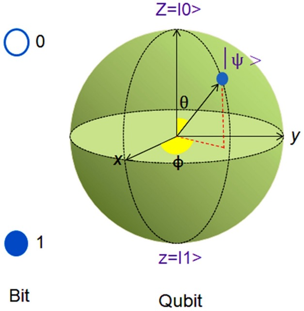
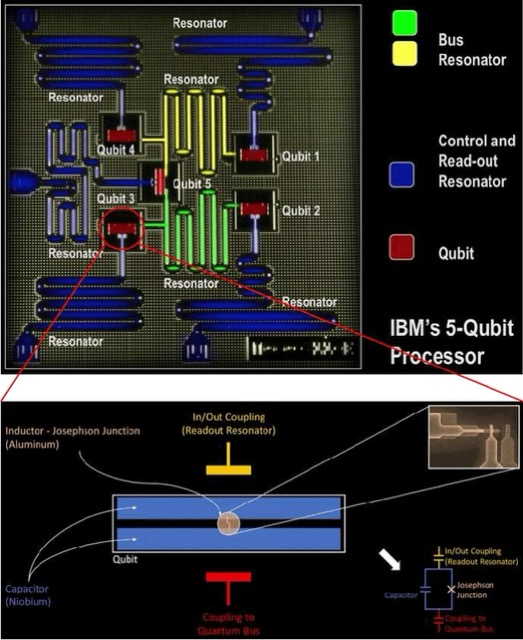
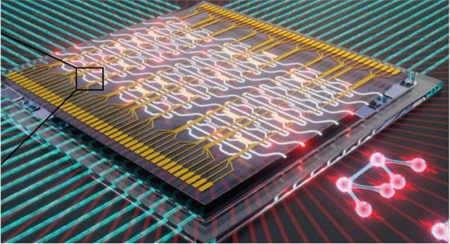
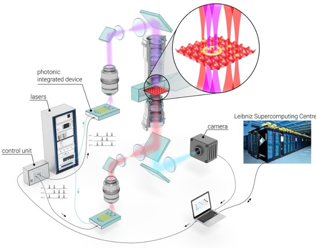
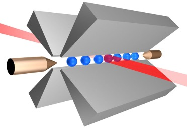
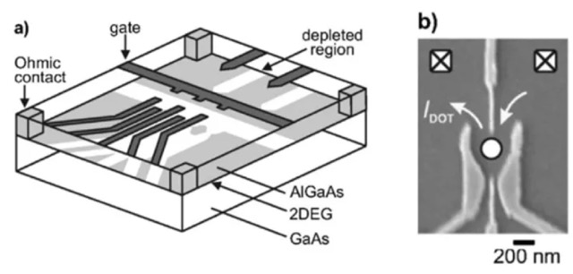
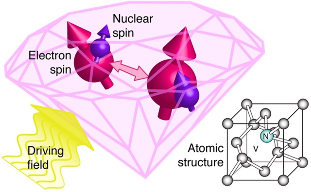
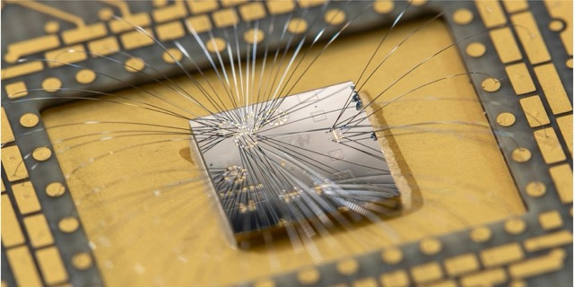

Practical Realization of Qubit
Understanding the building blocks of quantum computing: different qubit implementations and their characteristics
Introduction
The quantum bit, or qubit, is the fundamental unit of quantum information and the cornerstone of quantum computing technology. Unlike classical bits that exist in a state of either 0 or 1, qubits leverage quantum mechanical properties to exist in superposition—simultaneously representing 0, 1, or both.
As of 2024, the quantum computing field lacks a standardized method for constructing quantum computers, leading to a diverse range of experimental approaches to developing qubits as the unit of quantum information. Each technology brings unique strengths and challenges, making it crucial for researchers and practitioners to understand the practical implementations available.

Why Multiple Qubit Technologies?
Each qubit technology is optimized for different characteristics—coherence time, gate fidelity, scalability, operating temperature, and cost. Some excel at room temperature operation, while others require extreme cooling. Some achieve high fidelity gates, while others prioritize scalability. Understanding these trade-offs is essential for selecting the right technology for specific applications.
1. Superconducting Qubit
Superconducting qubits are a key player in solid-state quantum computing, harnessing superconducting electronic circuits to exploit unique quantum properties. These circuits enable quantum computing by processing quantum information efficiently at extremely low temperatures (approximately 4 millikelvin, or mK).

Key Characteristics:
- High gate fidelity and fast operation
- Requires dilution refrigerators for operation
- Relatively short coherence times (microseconds to milliseconds)
- Mature technology with established manufacturing
- Used by IBM, Google, and other major quantum companies
2. Photonic Qubit
Photonic Quantum Computing (PQC) employs individual photons, or particles of light, as qubits to manipulate and process quantum information. This approach leverages the intrinsic properties of light to perform quantum computations, with the significant advantage of operating at room temperature.

Key Characteristics:
- Room temperature operation eliminates cooling requirements
- Excellent for quantum communication and networking
- Lower error rates in certain operations
- Challenges with photon generation and detection efficiency
- More challenging to achieve two-qubit gates
3. Neutral-Atom Qubit
Neutral-atom quantum computing utilizes Rydberg atoms—highly excited neutral atoms with exaggerated atomic properties—serving as qubits. This method leverages strong interactions between Rydberg atoms to perform quantum operations, making it a promising approach for scalable quantum computing.

Key Characteristics:
- Potentially longer coherence times than superconducting qubits
- Lower error rates in quantum operations
- Highly scalable architecture
- Excellent for quantum simulation and computation
- Emerging technology with growing industry interest
4. Trapped Ion Qubit
Trapped ion quantum computing utilizes ions—atoms with electrical charge—confined in electromagnetic fields. These charged atoms are manipulated with lasers to perform quantum operations, achieving high-fidelity quantum gates through precise laser interactions.

Key Characteristics:
- Extremely high gate fidelity (99%+)
- Long coherence times (seconds or longer)
- Can interact at long distances
- Ideal for precise quantum simulations
- Highly suitable for scalable quantum computing
5. Quantum Dot Qubit
Quantum dot quantum computing uses tiny semiconductor nanoparticles, known as quantum dots, to confine electrons or holes in three-dimensional space, functioning as qubits. External electric or magnetic fields manipulate the quantum state of these confined charges to facilitate quantum operations.

Key Characteristics:
- Compatible with existing semiconductor manufacturing
- Potential for operation at higher temperatures
- Scalable solutions possible
- Reduced cooling infrastructure requirements
- Still in early development stages
6. NV Diamond Qubit
NV diamond quantum computing utilizes nitrogen-vacancy (NV) centers in diamond, where a nitrogen atom replaces a carbon atom adjacent to a vacancy in the diamond lattice. These defects act as stable qubits controlled and read out using optical and microwave techniques.

Key Characteristics:
- Room temperature operation
- Excellent environmental noise protection
- Long coherence times at room temperature
- Ideal for quantum sensing applications
- High fidelity and stability
7. Topological Qubit
Topological qubits employ quasiparticles in two-dimensional systems, called anyons, whose worldlines braid around one another in three-dimensional spacetime. These anyons are not defined by individual properties but by their spatial relationships, forming topological qubits whose quantum information storage is inherently resistant to local disturbances.

Key Characteristics:
- Global quantum information storage resists local disturbances
- Dramatically reduced error correction needs
- Theoretically fault-tolerant architecture
- Still largely theoretical with limited experimental demonstrations
- Long-term potential for highly stable quantum computers
Comparative Analysis: Choosing the Right Qubit
| Technology | Temperature | Gate Fidelity | Coherence Time |
|---|---|---|---|
| Superconducting | ~4 mK | ~99% | μs - ms |
| Photonic | Room temp | ~95% | Long |
| Trapped Ion | Room temp | 99.9%+ | Seconds+ |
| Neutral-Atom | mK | ~99% | Seconds |
| NV Diamond | Room temp | ~97% | Milliseconds |
Summary and Conclusions
The diversity of qubit models in quantum computing stems from the varying strengths and challenges each type presents. Different models—superconducting qubits, photonic qubits, trapped ions, neutral atoms, quantum dots, NV centers, and topological qubits—leverage distinct physical phenomena to process quantum information, offering unique advantages in coherence times, error rates, and operating conditions.
This variety allows researchers to explore multiple pathways for overcoming technological hurdles such as error correction and scalability. The choice of qubit model ultimately depends on specific requirements and goals:
- For near-term applications: Superconducting or trapped ion qubits offer mature, proven technologies
- For communication networks: Photonic qubits excel with room-temperature operation and distribution capability
- For quantum sensing: NV diamond qubits provide stability and precision at room temperature
- For long-term scaling: Neutral-atom and topological approaches show tremendous promise
The quantum computing field's diversity of approaches reflects the immaturity and exciting potential of the technology. No single approach has emerged as universally superior, and the most successful quantum computing future likely involves multiple complementary technologies serving different purposes.